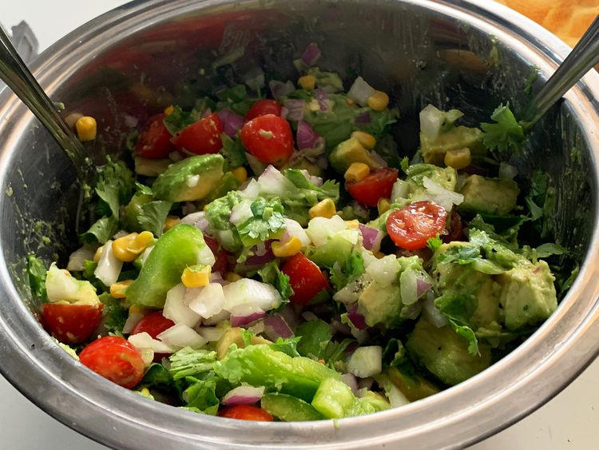

Avocado Salad

How to Make an Avocado Salad Step-By-Step
This avocado salad is a delicious combination
of ripe avocados, sweet onions, fresh tomatoes,
and cilantro. This recipe is so easy to make and
very colorful — I think you'll like it!
Ingredients
- Avocados: this recipe starts with two peeled, pitted, and diced avocados.
- Onion: a chopped sweet onion lends a bold flavor.
- Bell pepper: a chopped green bell pepper gives the salad a welcome crunch.
- Tomato: a chopped ripe tomato adds even more color and flavor.
- Cilantro: chopped cilantro takes the flavor up a notch.
- Lime: fresh lime juice adds brightness and prevents browning.
- Seasonings: simply season the avocado salad with just salt and pepper.
Steps
Simply stir all the ingredients together in a bowl.
That’s it! Find the full, step-by-step recipe below.